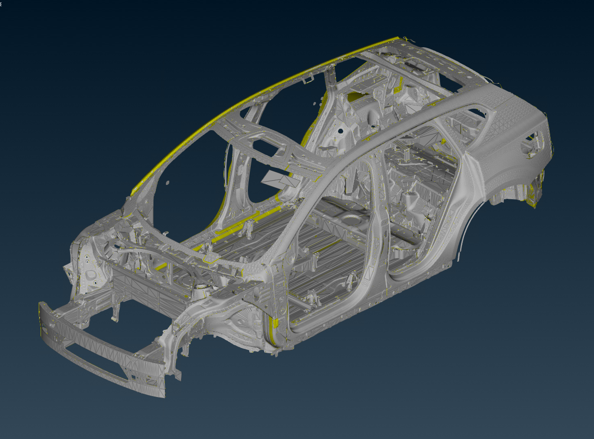
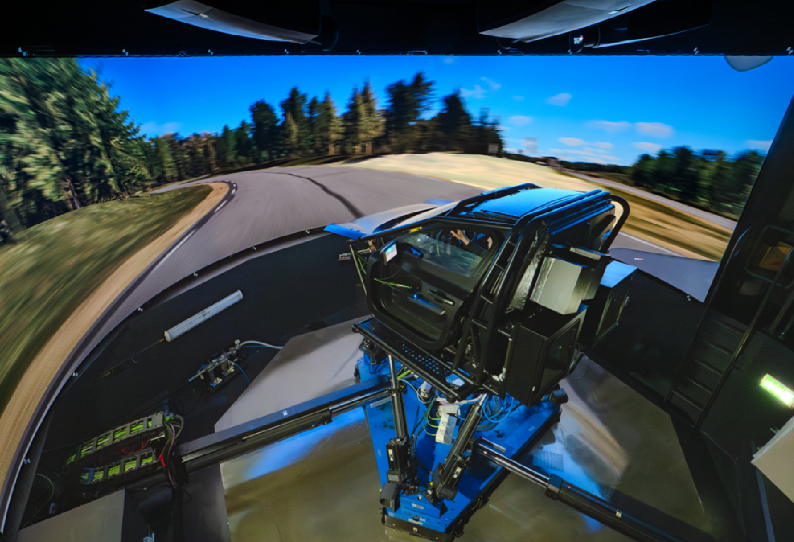
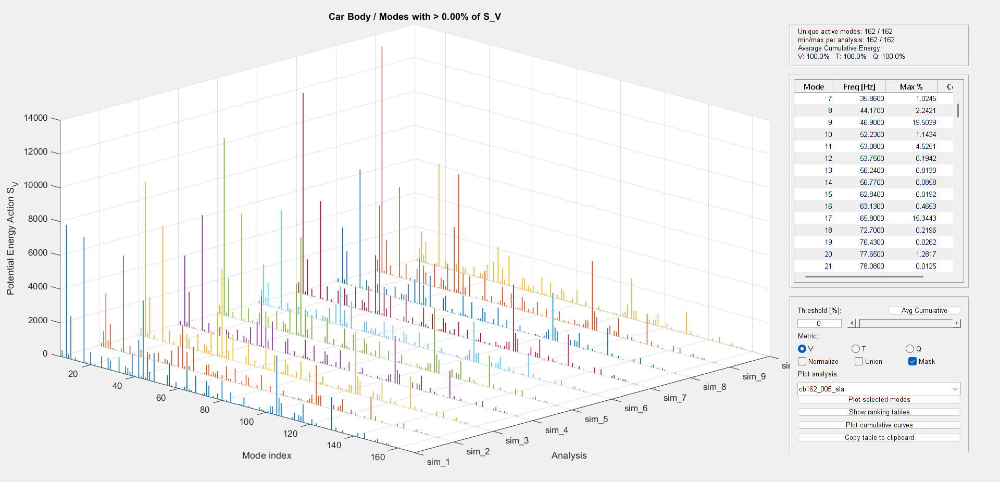
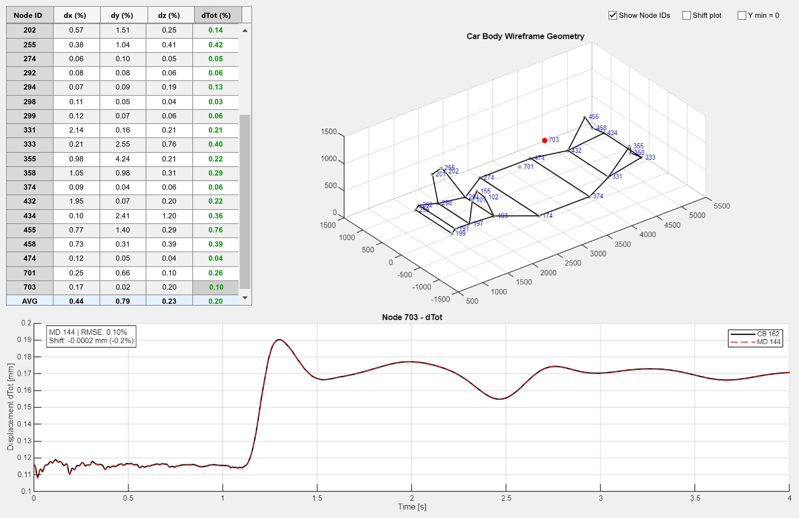

Reduced Flexible Body-in-White Models for Driving Simulator Applications
Problem
Real-time driving simulators can benefit from flexible structural components, because they allow the vehicle model to represent part of the body deformation that is normally neglected in rigid-body simulations. However, detailed finite element car-body models are computationally expensive and cannot be used directly in a real-time vehicle dynamics environment.
The challenge was to reduce a high-fidelity body-in-white model while preserving the structural behavior that matters for handling, steering response, interface loads, and simulator performance. The model also had to remain compatible with the multibody simulation workflow used for vehicle-level assessments.
Approach
I generated an Adams-compatible flexible-body representation from a finite element body-in-white model using component mode synthesis and Modal Neutral File export. The initial model was then refined through interface-node optimization to reduce the number of connection points and improve real-time feasibility.
Two reduction strategies were developed and compared. The first one used vehicle-level simulations to rank modes according to strain energy, kinetic energy, and modal participation during selected driving events. The second one used a state-space-based Modal Dominancy method to rank modes from the component-level input-output response without requiring time-domain vehicle simulations.
The reduced models were validated against a full flexible reference model using vehicle-dynamics signals, transfer functions, reconstructed interface-node displacements, real-time solver performance, and subjective driver feedback from simulator evaluations.
Solution
The final workflow made it possible to create reduced finite element car-body models suitable for real-time driving simulator applications. The results showed that body-in-white flexibility alone had a limited effect on the selected low-frequency steering-response quantities, while local structural accuracy remained strongly dependent on the retained modal content.
The project highlighted that real-time flexible-body modeling is not only a matter of removing modes. Interface definition, modal selection, validation metrics, and computational cost must be treated together to obtain a model that is both physically meaningful and usable in a simulator environment.




Insight 💡
The key lesson was that model reduction is not just about making a model lighter. A reduced model is useful only if it preserves the right behavior for the intended application. In this case, the goal was to find the best compromise between structural fidelity, vehicle-dynamics relevance, and real-time computational efficiency.